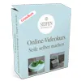

VIDEOKURS "Seife einfach selber machen"
Produktprofil · Marktplatz-Daten 2026-10-09 · Verkaufsseiten-Recherche 2026-10-09 · Kategorien: Hobby & Craft
- VIDEOKURS "Seife einfach selber machen" ist ein/e Download in Hobby & Craft, vertrieben über den Digistore24-Marktplatz von Anbieter aditsbest, gelistet seit 2017-06-17.
- Listenpreis $34.78; Digistore24 meldet — Checkout-Konversion, — Stornierungsquote und 40 % Affiliate-Provision.
- Verdienst pro Verkauf (Affiliate): $13.92 (Anbieter-seitige Statistik, keine Prognose).
Interesse an VIDEOKURS "Seife einfach selber machen"? Aktueller Preis, Boni und Garantiebedingungen finden Sie auf der offiziellen Seite des Anbieters:
Offizielle Verkaufsseite ansehen
Affiliate-Link (Werbung) — wir verdienen ggf. eine Provision, ohne Mehrkosten für Sie.

Marktplatz-Daten
| Produkttyp | Download |
|---|---|
| Preis | $34.78 (Single payment) |
| Affiliate-Provision | 40 % |
| Garantie/Rückgabe | Laut Verkaufsseite des Anbieters — vor dem Kauf auf der offiziellen Seite prüfen |
| Anbieter | aditsbest (gelistet seit 2017-06-17) |
| Marktplatz-Statistiken* | Checkout-Konversion — · Stornoquote — · Verdienst/Verkauf $13.92 |
* Anbieter-seitige Statistiken von Digistore24; sie hängen von der Traffic-Qualität ab und sind keine Prognose.
Marktplatz-Beschreibung des Anbieters
Selbst gemachte Naturseifen sind nicht nur besondere und hochwertige Pflegeprodukte, sondern stellen auch ein perfektes, sinnliches und persönliches Geschenk zu jedem Anlass dar. Das Besondere an selbst gemachter Seife ist, dass diese frei von unerwünschten chemischen Zusatzstoffen ist und Du hochwertige Öle, Fette und pflanzliche Inhaltsstoffe wie Kräuter sowie feinste ätherische Öle verwenden ka…
Von der Verkaufsseite des Anbieters
Wie Produkte dieser Art geliefert werden
Allgemeiner Hinweis zu diesem Produkttyp (keine anbieterspezifische Anleitung): Download-Produkte werden digital geliefert: sofort nach dem Checkout erhalten Sie Downloadlinks (oder Zugang zu einem Mitgliederbereich) — kein physischer Versand. Für die genaue Anwendung von VIDEOKURS "Seife einfach selber machen" sind die offizielle Verkaufsseite und die enthaltenen Materialien maßgeblich.
Häufige Fragen zu VIDEOKURS "Seife einfach selber machen"
Was ist VIDEOKURS "Seife einfach selber machen"?
VIDEOKURS "Seife einfach selber machen" ist ein Angebot des Typs „Download" im Digistore24-Marktplatz, Anbieter: aditsbest, gelistet seit 2017-06-17. Eingepflegt unter Hobby & Handwerk. Digistore24 wickelt Checkout, Lieferung und Rückgaben ab.
Wie viel kostet VIDEOKURS "Seife einfach selber machen"?
Der Digistore24-Marktplatz listet es für $34.78 (single payment). Preise legt der Anbieter fest und können sich ändern — der Marktplatz-Eintrag oben zeigt den Schnappschuss; die offizielle Verkaufsseite zeigt den aktuellen Preis.
Gibt es eine Geld-zurück-Garantie für VIDEOKURS "Seife einfach selber machen"?
Unsere Verkaufsseiten-Recherche hat keine explizite Garantie-Formulierung gefunden. Viele Digistore24-Produkte bieten 60 Tage Geld-zurück, aber das legt jeder Anbieter selbst fest — bestätigen Sie es auf der offiziellen Verkaufsseite, bevor Sie kaufen.
Ist VIDEOKURS "Seife einfach selber machen" seriös?
Wir bewerten keine Seriosität — wir veröffentlichen überprüfbare Zahlen: Anbieter aditsbest (gelistet seit 2017-06-17), Checkout-Konversion —, Stornoquote —, Affiliate-Verdienst/Verkauf $13.92 (alles Anbieter-seitige Marktplatz-Statistiken). Lesen Sie unsere 6-Punkte-Bewertungsmethode und entscheiden Sie anhand der Zahlen — oder diskutieren Sie VIDEOKURS "Seife einfach selber machen" auf GitHub.
Wo kann ich VIDEOKURS "Seife einfach selber machen" sicher kaufen?
Nur über die offizielle Verkaufsseite, die auf dieser Seite verlinkt ist (Checkout und Rückgaben laufen über Digistore24). Prüfen Sie dort Preis und Garantie vor der Bestellung. Der Link ist ein Affiliate-Link — der Kauf unterstützt diese Website ohne Mehrkosten für Sie.
Ähnliche Angebote in Hobby & Handwerk

VoxelPrint Pro ist ein professionelles WordPress- & WooCommerce-Plugin, das deinen Shop in einen vollautomatischen 3D-Druck-Service mit echtem Multicolor-Su
Verdien 190 Euro netto pro Sale in der unentdecktesten Nische des Jahres! Bist du genervt von den ewig gleichen Geld-verdienen-Produkten wie Dropshipping, Krypt
Unser Produkt: Online-Zeichenkurs „Vom Anfänger zum Meister“ Ein umfassender, praxisorientierter Online-Zeichenkurs für Anfänger und Fortgeschrittene, die reali

Lass uns auf die Reise gehen und erlebe wie leicht das Klavierspielen sein kann - mit dem Piano.University Intuinauten-Programm. Premium Video-Online-Klavierkur
Ähnliche Preislage in Hobby & Handwerk
Zeichnen lernen: Der Online-Zeichenkurs „Natur und Landschaft zeichnen“ Der Zeichenkurs ist ein umfassender Online-Zeichenkurs für realistisch zeichnende Mensch

Praxisnahes digitales Vorlagenpaket für Handwerker, Bauleiter, Monteure, kleine Bauunternehmen und Nachunternehmer. Das Produkt löst ein alltägliches Problem: v
ALTBAU KAUFEN ODER SANIEREN – MIT KLARER STRUKTUR STATT KOSTSPIELIGER ÜBERRASCHUNGEN Der Altbau-Kompass ist ein digitales Prüf-, Planungs- und Dokumentationspak
Ähnliche Suchanfragen
Wo Sie es sich ansehen können
Wo Sie es sich ansehen können
Aktuelle Preise, Garantie und Boni finden Sie auf der offiziellen Verkaufsseite:
Offizielle Verkaufsseite ansehen
Das ist ein Affiliate-Link (Werbung) — kaufen Sie darüber, verdienen wir ggf. eine Provision, ohne Mehrkosten für Sie.
Quellen & weiterführende Informationen
- Offizielle Verkaufsseite (aktueller Preis, Garantie, Boni): seifen-tutorials.de/ (Affiliate-Link)
- Öffentliche Digistore24-Produktseite: digistore24.com/product/144229
- Vollständige Recherche-Datei (Markdown, versioniert): content/products/20955-videokurs-seife-einfach-selber-machen.md
- Marktplatz-Kategorie: Hobby & Handwerk
Wie wir Produkte wie VIDEOKURS "Seife einfach selber machen" bewerten
Sechs Prüfungen, ausschließlich mit offiziellen Marktplatz-Zahlen. Die vollständige Bewertungsmethode lesen · unsere Recherche-Standards & Kennzeichnung.
Fragen oder eigene Erfahrungen mit VIDEOKURS "Seife einfach selber machen"?
Praxis-Tests veröffentlichen wir erst, nachdem wir ein Produkt selbst gekauft haben — aber Ihre Erfahrung hilft anderen Lesern: Diskussion zu VIDEOKURS "Seife einfach selber machen" auf GitHub starten/verfolgen. Falsche Zahl gefunden? Korrektur melden — jede Seite zeigt ihre Datenstände, Korrekturen gelten für die ganze Website.